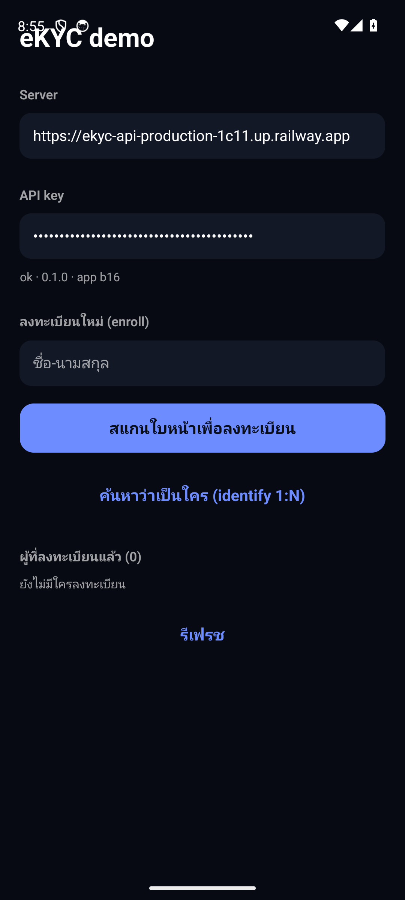
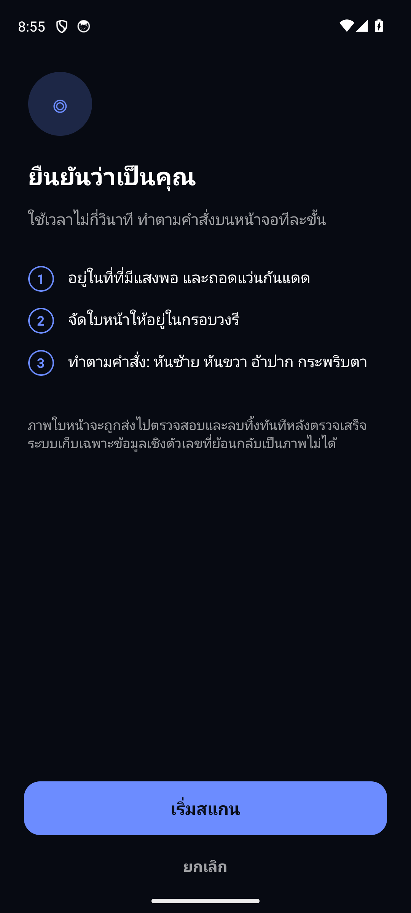
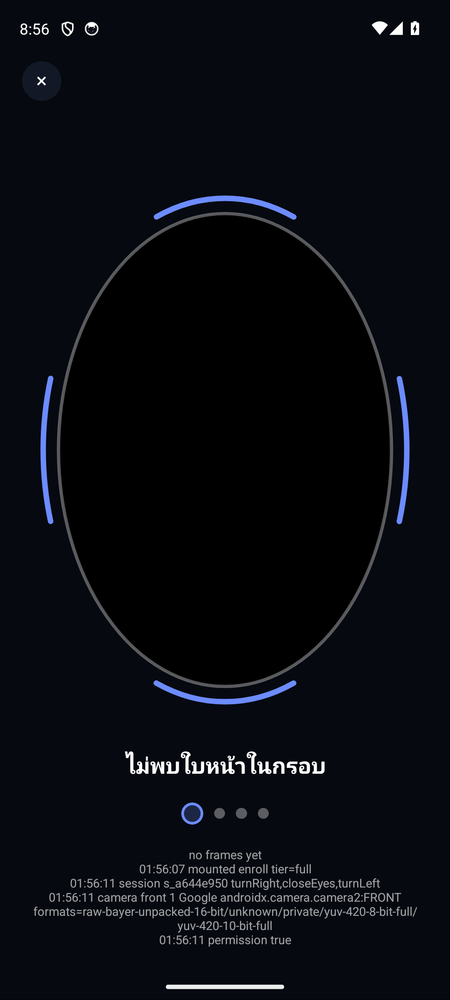

| ชื่อระบบ | eKYC Server (FastAPI) + แพ็กเกจ @ekyc/react-native-ekyc + แอป apps/example |
| เวอร์ชันเอกสาร | 2.1 (server deploy 19 ส.ค. 2569, แอป build 22) |
| วันที่จัดทำ | 19 สิงหาคม 2569 |
| สถานะ | ฉบับส่งมอบเพื่อทดสอบภายใน |
| เซิร์ฟเวอร์ทดสอบ | https://ekyc-api-production-1c11.up.railway.app (backend onnx) |
| API key ทดสอบ | ekyc_test_C1j1qeat6X1dwegYIuNjAqkmP0O2pATK (ฝังในแอป build 21+; ใช้เฉพาะทดสอบ) |
| แหล่งโค้ด / ไฟล์ติดตั้ง | https://github.com/watcharaponthod-code/ekyc (branch master, Releases server-v1.0.0-b22) |
แอปบนโทรศัพท์นำผู้ใช้ทำท่าตามคำสั่ง ถ่ายหลักฐานทุกขั้น แล้วส่งให้เซิร์ฟเวอร์ตัดสินว่า (1) เป็นคนจริงที่ทำท่าตามคำสั่งขณะนั้น (2) ไม่ใช่สื่อปลอม (รูป/จอ/หน้ากาก) (3) เป็นคนเดียวกันตลอดรอบ และ (4) เป็นใคร — ลงทะเบียน (enroll), ยืนยันกับบุคคลที่ระบุ (verify) หรือค้นว่าตรงกับใคร (identify) ผลลัพธ์แสดงชื่อบุคคลและคะแนนตรงบนหน้าจอ
| ความสามารถ | สถานะบนเซิร์ฟเวอร์ทดสอบ (backend onnx) |
|---|---|
| คำสั่งท่าทาง: อ้าปาก (ทุกครั้ง) + สุ่ม 3 จาก กระพริบตา · หันซ้าย · หันขวา · ขยับเข้า · ขยับออก | บังคับ — ทุกท่าเป็นการเคลื่อนไหวเทียบท่ามองตรง; เกณฑ์มุมหันส่งจากเซิร์ฟเวอร์ให้แอป (22° + margin 3°) |
| ตรวจการปลอมแปลง 2 มิติ (PAD) — MiniFASNet บนเฟรมท่าทาง | บังคับ (≥ 0.5) · ค่าที่วัดได้จริงกับคนจริง 0.995+ |
| มุมหัน/ก้ม จากจุดสำคัญ 5 จุด เทียบเฟรมมองตรง | บังคับ · ค่าที่หันได้จริง 52–63° |
| ความเป็นคนเดียวกันตลอดรอบ (ArcFace ทุกเฟรม); เก็บหลักฐานทุก shot | บังคับ (≥ 0.35) · วัดได้จริง 0.61–0.72; หลักฐานเก็บลง volume ถาวร ดูผ่าน gallery (ข้อ 6) |
| คุณภาพภาพ (ความคม สว่าง ขนาด มุมเอียง) | บังคับ — เคยตกจริง QUALITY_SHARPNESS (ภาพมองตรงเบลอ 45–57 vs เกณฑ์ 60) → build 22: แอปวัดความคมของเฟรมมองตรงเองด้วยสูตรเดียวกับเซิร์ฟเวอร์ ถ้าเบลอถ่ายซ้ำทันทีในจังหวะเดียวกัน (ไม่ต้องค้างนาน ไม่ต้องรอผลจากเซิร์ฟเวอร์) |
| ตาหลับ/ลืม (EAR) | advisory บน onnx — จุดสำคัญ 5 จุดวัดตาเป็นค่าประมาณ (ตกทั้ง 4 รอบทดสอบทั้งที่กระพริบจริง) → เปลี่ยนเป็นบันทึกอย่างเดียว; บังคับเมื่อใช้ backend deepface (MediaPipe) |
| แสงสีจากหน้าจอ 4 สี สะท้อนบนใบหน้า | advisory · วัดได้จริง 0.82–0.92 (เกณฑ์ 0.5) — พร้อมเปิดบังคับเมื่อมีข้อมูลโจมตี |
| ชีพจร (rPPG), ระนาบภาพ, ร่องรอยฉีดภาพ, attestation; อ้าปาก/ยิ้มจาก blendshape | advisory / ตรวจการมีอยู่; อ้าปาก/ยิ้มวัดบนเซิร์ฟเวอร์เฉพาะ backend deepface (บน onnx แอปบังคับท่าเองด้วย ML Kit) |
| หน้ากาก 3 มิติ / ซิลิโคน | ชั้นกัน: อ้าปากบังคับ (หน้ากากแข็ง), PAD, rPPG, flash — ไม่มีการรับรอง ISO/IEC 30107-3 (ต้องห้องปฏิบัติการที่ได้รับการรับรอง); มีเครื่องมือประเมินแบบเดียวกับมาตรฐาน |
| Endpoint | หน้าที่ |
|---|---|
POST /v1/sessions | สร้างรอบ: purpose (enroll/verify/identify), tier → คืน sessionId, รายการท่า, จำนวนเฟรม flash, policy (เกณฑ์มุม), nonce |
POST /v1/sessions/{id}/submit | multipart: เฟรมชื่อ neutral / turnLeft / … / flash_0..3 (+ pulse) → decision, reasons, scores, personId, displayName, match, serverMs |
GET /v1/audit, /v1/audit/gallery?key=, /v1/audit/{id}/frames | สรุปรอบล่าสุด (อัตราผ่าน เหตุผล การกระจายคะแนน) · หน้าเว็บ thumbnail ทุกภาพต่อรอบ · ภาพรายรอบ |
GET /health | สถานะ + backend |
EKYC_BACKEND=onnx · EKYC_API_KEYS=… · EKYC_NEUTRAL_YAW_MAX_DEG=45 · EKYC_FLASH_FRAMES=4 · EKYC_FLASH_RULE=advisory · EKYC_EYE_RULE=advisory · EKYC_RETAIN_FRAMES=all · EKYC_FRAMES_DIR=/data/retained · DATABASE_URL (PostgreSQL) — โมเดลดาวน์โหลดตอน build image (scripts/fetch_models.py onnx) · redeploy: cd server && railway up --service ekyc-api --detach
| gate | เงื่อนไข | ที่มา / ค่าที่วัดได้จริง |
|---|---|---|
| โครงสร้าง | เฟรมครบทุกท่าที่สั่ง 1 ใบหน้าหลักต่อเฟรม nonce ตรง | — |
| คุณภาพ | ความคม (Laplacian var บนใบหน้า 160 px) ≥ 60, สว่าง 40–220, ใบหน้า ≥ 112 px, roll ≤ 25° | ตกจริง 2/8 รอบ (44.9, 56.8; รอบที่ผ่าน 106–186) → เซิร์ฟเวอร์ส่ง sharpnessMin ใน policy, แอปวัดเองและถ่ายซ้ำ (≤ 3 ครั้ง) ก่อนไปท่าถัดไป |
| PAD | ค่าเฉลี่ย MiniFASNet บนเฟรมท่าทาง ≥ 0.5 | คนจริง 0.995–0.999 |
| ท่าทาง | Δyaw ≥ 22° (ซ้าย/ขวา) เทียบมองตรง; มองตรง |yaw| ≤ 45° | หันได้จริง 52–63°; เกณฑ์ส่งให้แอป (+3°) จึงไม่ขัดกัน |
| ตา | EAR ปิด ≤ 0.18 ลืม ≥ 0.22 | onnx = advisory (ดูตารางที่ 1) |
| คนเดียวกัน | cosine ArcFace ทุกเฟรมเทียบมองตรง ≥ 0.35 (รวม pulse frames) | 0.61–0.72 (ท่าหันทำให้ต่ำกว่าภาพตรง เป็นปกติ) |
| แสงจอ | correlation ต่อ channel ≥ 0.5 (advisory) | 0.82–0.92 |
| ชีพจร | rPPG prominence ≥ 7 dB (advisory, ต้อง pulse burst) | ยังไม่มีตัวเลขจากเครื่องจริงพอ |
| Match | cosine กับ template ≥ 0.5 | identify จริง 0.84 |
ทุกท่าเทียบกับ baseline ของคนคนนั้น ท่า 2 ช่วง (กระพริบ อ้าปาก ขยับเข้า/ออก) ถ่ายหลักฐานที่ช่วงแรกและต้องผ่านช่วงกลับ (ลืมตา หุบปาก กลับระยะเดิม) ระหว่างท่าต้องกลับมามองตรง (±12°) และทุกขั้นบันทึก "ทำได้/ต้องการ" ลง telemetry — ชุดทดสอบ motion.test.ts ยืนยันว่าไม่มีท่าใดผ่านด้วยท่าค้างหรือรูปนิ่ง
| ชุดทดสอบ | ผล | ครอบคลุม |
|---|---|---|
| Server (pytest, backend fake) | 154 ผ่าน | ทุก gate, นโยบายสุ่มท่า, API key, retention, audit/gallery, flash เบา + วัดขนาน, displayName ใน enroll/verify/identify, serverMs |
| Core client (jest) | 136 ผ่าน | LivenessSession, ทุก Challenge, ท่า 2 ช่วง, recenter, tuning จาก policy, telemetry, ประตูตรวจความคมเฟรมมองตรง (ถ่ายซ้ำ/ไม่ถ่ายซ้อน/หยุดที่ 3 ครั้ง), Laplacian port |
PAD harness scripts/pad_eval.py | พร้อมใช้ | APCER / BPCER / ACER / NRR ต่อชนิดการโจมตี พร้อม Wilson CI — แบบเดียวกับ ISO/IEC 30107-3 (ผลจริงต้องใช้ชุดโจมตีจริง) |
| ชุด | รอบ | ผล | ค่าที่วัดได้ |
|---|---|---|---|
| build 20 ก่อนแก้ตา | 4 | ตกทั้งหมดด้วย EYES_NOT_CLOSED แม้กระพริบจริง | PAD 0.995+, flash 0.82–0.92, identity 0.61–0.72, หัน 52–63° |
| หลังตั้ง eye=advisory | 4 | enroll ผ่าน · identify ผ่าน (match 0.84) · 2 รอบตก QUALITY_SHARPNESS | ทุก gate อื่นผ่าน |
ความเร็ว: build 20 รอผล ~10 วินาที เพราะเฟรม flash 4 ภาพถูกวัดเต็ม (PAD + ArcFace) ทีละภาพ → build 21+: เฟรม flash วัดเฉพาะสีใบหน้า, วัดทุกเฟรมขนาน 4 threads, เฟรม flash JPEG เล็กลง; เซิร์ฟเวอร์รายงาน serverMs ทุกรอบ — ถ้า serverMs น้อยแต่ยังรอนาน ส่วนที่เหลือคือการอัปโหลด (แก้ด้วยการย่อภาพฝั่งแอป)



ekyc-example-v1.0.0-b22-arm64.apk — เซิร์ฟเวอร์และ API key ทดสอบถูกตั้งไว้แล้วNO_MATCH · Verify เลือกบุคคลแล้วยืนยันhttps://ekyc-api-production-1c11.up.railway.app/v1/audit/gallery?key=<API key> — thumbnail ทุกภาพ (neutral / ท่า / flash) ต่อรอบพร้อมผล เหตุผล และคะแนน; สรุปอัตราผ่านที่ /v1/audit (header X-API-Key)scripts/audit_report.py รวมการกระจายคะแนนต่อ gate; gate advisory (flash, pulse, eye บน onnx) เปลี่ยนเป็นบังคับเมื่อ p10 ของคนจริงผ่านสบายและมีรอบโจมตีไว้ประเมิน APCER| # | กรณี | ผลที่คาดหวัง |
|---|---|---|
| 1 | ทำท่าจริง ถือเครื่องนิ่งตอนมองตรง | ผ่าน; PAD ≥ 0.99, flash ≥ 0.8; enroll/identify แสดงชื่อ |
| 2 | รูปถ่ายหรือจอมือถืออีกเครื่อง | ท่าเคลื่อนไหวไม่ผ่านฝั่งแอป; ถ้าหลุดไปถึงเซิร์ฟเวอร์ PAD ต่ำ → PAD_SPOOF; flash score ต่ำ (บันทึก) |
| 3 | คนละคนกลางรอบ (สลับคน) | IDENTITY_INCONSISTENT |
| 4 | Identify คนที่ไม่เคย enroll | NO_MATCH (ไม่มีชื่อ) |
| 5 | เรียก API โดยไม่มี key | 401 |
| 6 | หน้ากากกระดาษ/แข็ง | อ้าปากไม่ผ่านฝั่งแอป (หมดเวลา) — บันทึกเป็นรอบโจมตีสำหรับ pad_eval.py |
serverMs จากรอบจริง; โมเดลยังเป็น CPUMISSING_FRAME · NO_FACE · MULTIPLE_FACES · FRAME_UNREADABLE (โครงสร้างหลักฐาน) · QUALITY_SHARPNESS/BRIGHTNESS/FACE_SIZE/ROLL (คุณภาพ) · PAD_SPOOF · POSE_NOT_MET · EYES_NOT_CLOSED · MOUTH_NOT_OPEN · IDENTITY_INCONSISTENT · FLASH_SPOOF · PULSE_ABSENT · NO_MATCH (gates — บางตัว advisory ตามตารางที่ 1) · 401 ไม่มี/ผิด API key · 404/410 session ไม่มี/หมดอายุ/ใช้แล้ว
| Base URL | https://ekyc-api-production-1c11.up.railway.app |
|---|---|
| API key ทดสอบ | ekyc_test_C1j1qeat6X1dwegYIuNjAqkmP0O2pATK |
| การยืนยันตัว | header X-API-Key: <key> (หรือ Authorization: Bearer <key>) ทุก endpoint ยกเว้น /v1/health; หน้า gallery และไฟล์ภาพรับ ?key= ด้วยเพื่อเปิดในเบราว์เซอร์ |
| ลำดับหนึ่งรอบ | สร้าง session → แอปทำท่าตามรายการ challenges ที่ได้ ถ่ายหลักฐานทุกท่า + flash → submit ภายใน expiresAt (ใช้ได้ครั้งเดียว) → อ่าน decision |
| สถานะ | GET /v1/health (ไม่ต้องใช้ key) → {"status":"ok","version":"…","backend":"onnx","models":{…}} |
POST /v1/sessionscurl -X POST https://ekyc-api-production-1c11.up.railway.app/v1/sessions \
-H "X-API-Key: ekyc_test_C1j1qeat6X1dwegYIuNjAqkmP0O2pATK" -H "Content-Type: application/json" \
-d '{"purpose":"enroll","displayName":"สมชาย","tier":"full"}'
→ 201 {"sessionId":"s_…","nonce":"…","challenges":["turnLeft","openMouth","closeEyes","moveCloser"],
"flash":["red","green","blue","white"],"pulse":null,"expiresAt":"…",
"policy":{"holdMs":400,"perStepTimeoutMs":12000,"totalTimeoutMs":60000,
"turnYawMinDeg":22,"neutralYawMaxDeg":45,"sharpnessMin":60}}
purpose: enroll (ใส่ displayName) · verify (ใส่ personId) · identify · tier: full (4 ท่า) / reduced (1 ท่า, ใช้ step-up) · label: ป้ายสำหรับประเมิน PAD เช่น bona_fide, mask_silicone (ไม่มีผลต่อการตัดสิน) · ทำตามลำดับ challenges และแสดงสี flash ตามลำดับ
POST /v1/sessions/{sessionId}/submit (multipart)curl -X POST https://ekyc-api-production-1c11.up.railway.app/v1/sessions/s_…/submit \
-H "X-API-Key: ekyc_test_C1j1qeat6X1dwegYIuNjAqkmP0O2pATK" \
-F 'manifest={"nonce":"…","startedAt":1723900000000,"finishedAt":1723900025000,
"steps":[{"name":"turnLeft","tStart":…,"tEnd":…,"observed":{"yaw":31.2}}],
"capture":{"frameWidth":1080,"frameHeight":1920,"fps":30,"mirrored":true}}' \
-F frames=@neutral.jpg -F frames=@turnLeft.jpg -F frames=@openMouth.jpg -F frames=@closeEyes.jpg \
-F frames=@moveCloser.jpg -F frames=@flash_0.jpg -F frames=@flash_1.jpg -F frames=@flash_2.jpg -F frames=@flash_3.jpg
→ {"decision":"pass","reasons":[],"scores":{"pad":0.998,"identityConsistency":0.69,"flash":0.86,
"quality":{"sharpness":113.8,"brightness":0.47,"faceRatio":0.58},"steps":{…}},
"personId":"p_…","displayName":"สมชาย","match":null,"serverMs":1840}
ชื่อไฟล์ = คีย์ของเฟรม: neutral (มองตรง, วัดคุณภาพ/ใช้เป็น template), ชื่อท่าแต่ละท่า, flash_0..n-1 (ตามจำนวนสีที่ได้), ถ้ามี pulse: pulse_0..k-1 · JPEG ขนาดตัวอย่าง ~1080 px พอ (ArcFace 112 px, MiniFASNet 80 px) · verify ที่ไม่ตรง → decision:"fail", reasons:["NO_MATCH"] · identify ที่ตรง → displayName + match.score
GET /v1/persons, DELETE /v1/persons/{id}curl -H "X-API-Key: ekyc_test_C1j1qeat6X1dwegYIuNjAqkmP0O2pATK" https://ekyc-api-production-1c11.up.railway.app/v1/persons
→ [{"id":"p_…","displayName":"สมชาย","templateCount":1,"createdAt":"…"}]
curl -X DELETE -H "X-API-Key: ekyc_test_C1j1qeat6X1dwegYIuNjAqkmP0O2pATK" https://ekyc-api-production-1c11.up.railway.app/v1/persons/p_… → 204
GET /v1/audit?limit=50 สรุปอัตราผ่าน เหตุผล การกระจายคะแนนทุก gate + รายการรอบล่าสุด
GET /v1/audit/gallery?key=ekyc_test_C1j1qeat6X1dwegYIuNjAqkmP0O2pATK หน้าเว็บ thumbnail ทุกภาพต่อรอบ (เปิดในเบราว์เซอร์)
GET /v1/audit/{sessionId}/frames รายการภาพของรอบ · GET /v1/audit/{sessionId}/frames/{key}.jpg?key=… ภาพเดี่ยว
POST /v1/client-log {"device":"…","level":"info","message":"…","detail":"…","session":"s_…"} log จากแอปเข้า log เซิร์ฟเวอร์ (204)
import { EKYCCamera, EKYCClient } from '@ekyc/react-native-ekyc'
const client = new EKYCClient({ baseUrl: 'https://ekyc-api-production-1c11.up.railway.app',
apiKey: 'ekyc_test_C1j1qeat6X1dwegYIuNjAqkmP0O2pATK' })
<EKYCCamera client={client} purpose="identify" locale="th" onResult={(d) => console.log(d.decision, d.displayName, d.match?.score)} />
คอมโพเนนต์ทำครบเอง: สร้าง session, นำทำท่า, วัดความคมเฟรมมองตรงแล้วถ่ายซ้ำถ้าเบลอ, แสงจอ, ส่งหลักฐาน, แสดงผลพร้อมชื่อ · ตั้ง tier, personId, displayName, evaluationLabel ได้ผ่าน props